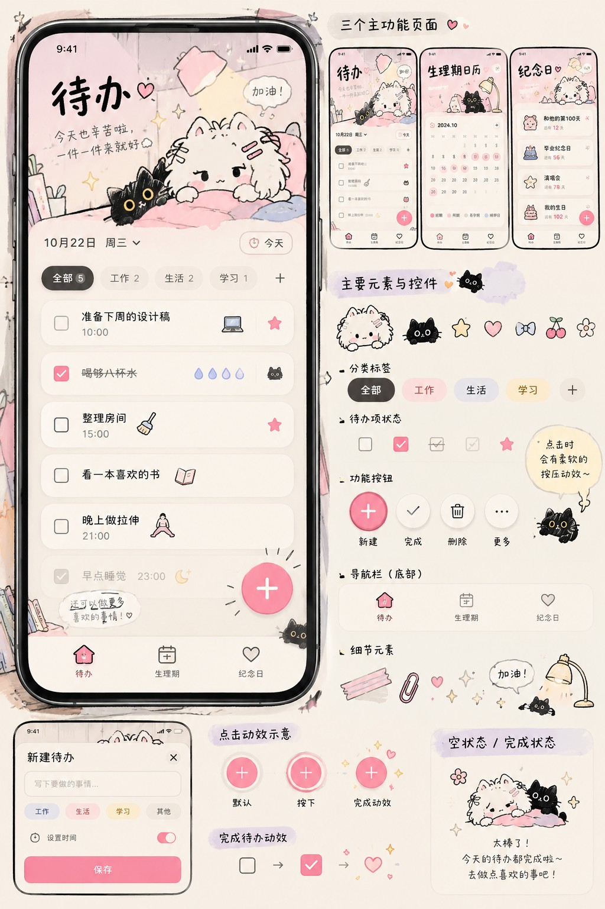
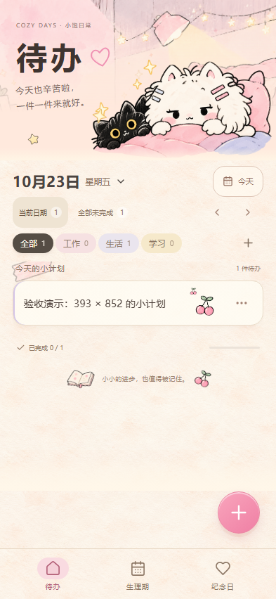

M5 全量整合审查
纪念日模块 · 本轮验收
REAL DEVICES
手机视口截图
360 × 740 · 393 × 852 · 430 × 932
ORIGINAL ILLUSTRATIONS
原创插画真实状态验收
四张独立透明 PNG 保留原稿贴边造型。盆栽位于头图左缘，书本与黑猫复用既有底部留白；加号横向避让黑猫，任务卡片与日期筛选布局保持。以下均为 Playwright 真实页面截图，安全区图为 34px CSS 模拟，Android 原生安全区仍需实机验收。

INTERACTION
真实交互录屏
支持播放、暂停和全屏
本轮选择器细节
真实浏览器证据
DESIGN CHECK
原始设计与页面


AUTOMATION
自动化验收
检测 PR 检查状态…
PR 自动检查运行快速构建；完整交互、持久化、撤销与三个手机视口回归由手动完整检查运行。各次通过结果只对应记录的源码 SHA；失败的检查不能作为通过版本合并。
BUILD & DEPLOY
构建与部署
THIS CHANGE
本轮修改清单
读取本轮 PR 摘要…
变更文件
KNOWN LIMITATIONS
已知问题与未实现项
- 当前未关联独立 Preview。
- 纪念日与生理期功能、素材缺口和实际验收范围请查看 M5 专属验收页；Android 真机仍未验收。
- 插画和纸张纹理仍以现有资源为准，尚未精确复刻原设计稿。
- 浏览器测试覆盖软键盘布局与安全区的 CSS 适配；Android 原生键盘行为仍需在实机上验收。